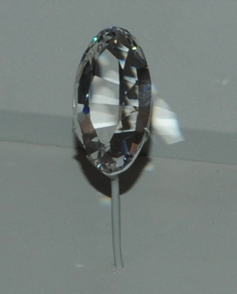
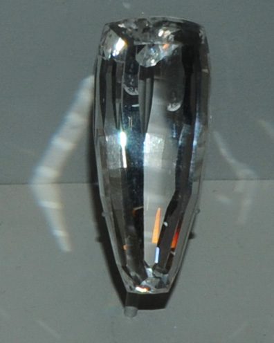

This sample of petalite is displayed in the Smithsonian Museum of Natural History. Petalite is a silicate mineral of lithium and aluminum with the composition LiAlSi4O10. The sample at left is about 5 cm across and is of unknown origin.


This petalite gem is 55 carats and is from Namibia.
This petalite gem is 127 carats and is from Virgem da Lapa, Minas Gerais, Brazil.